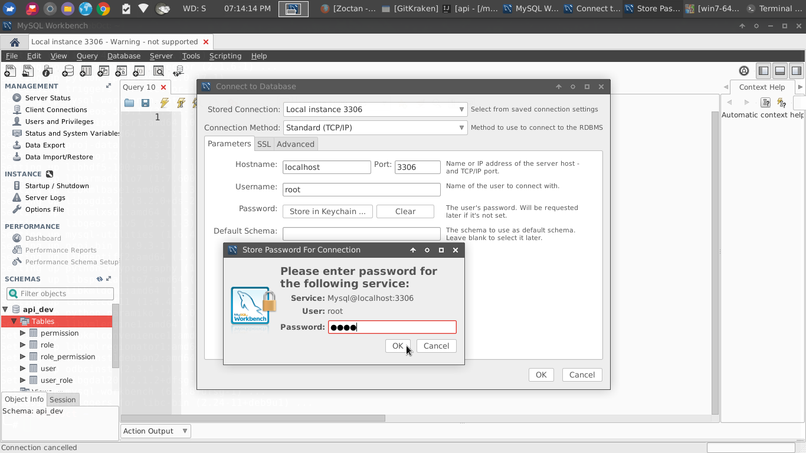
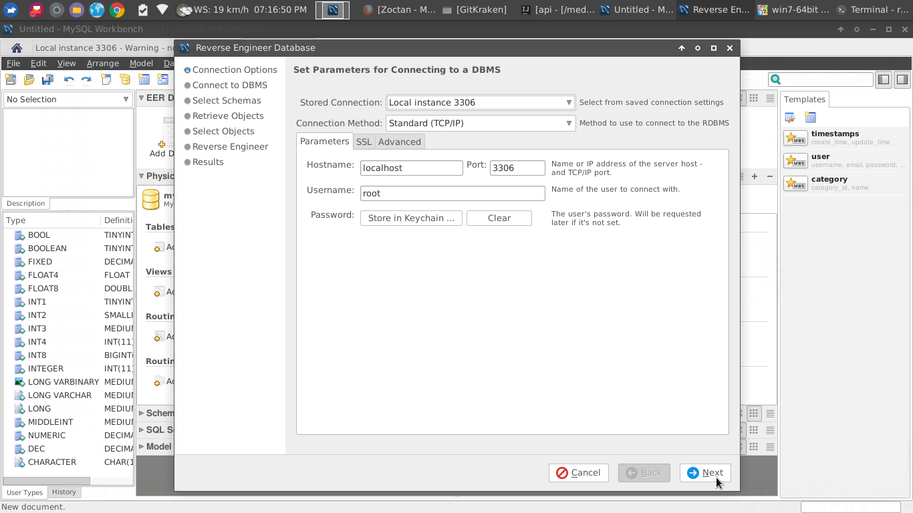
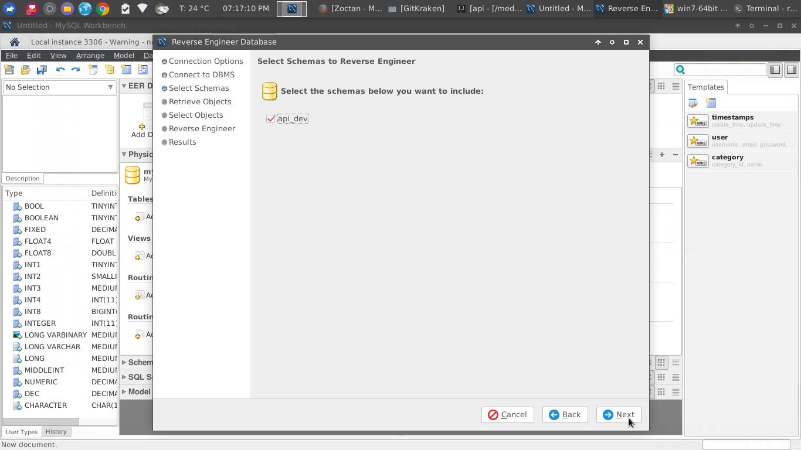
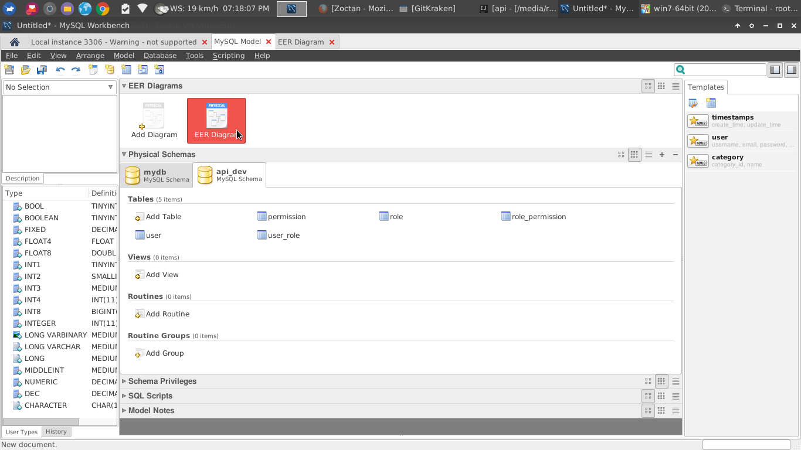
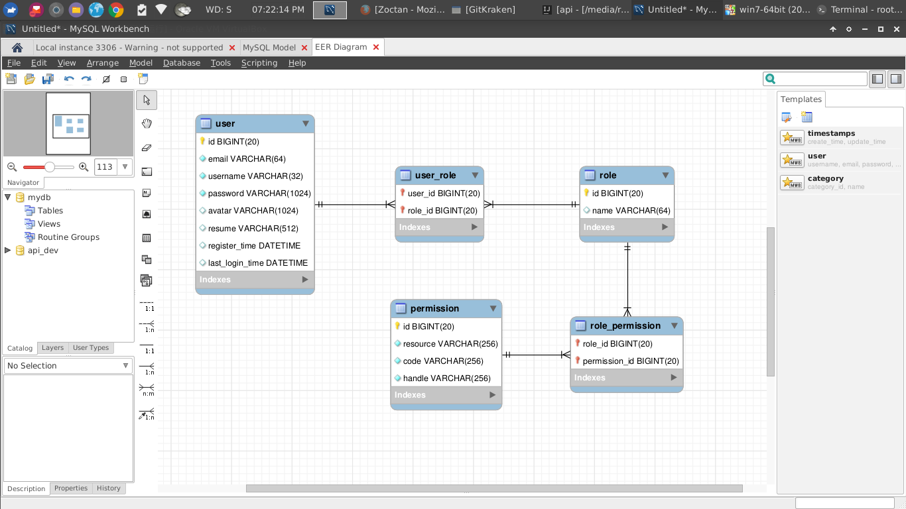

Debian 下安装：sudo apt install mysql-workbench
连接数据库：菜单栏 Database -> Connect to Database

Connect
逆向引擎：菜单栏 Database -> Reverse Engineer

Reverse
选择要逆向的数据库

Reverse
一直 next，最后 excute，可以看到已经生成的 ER 图

EER

EER
文件导出：菜单栏 File -> Export